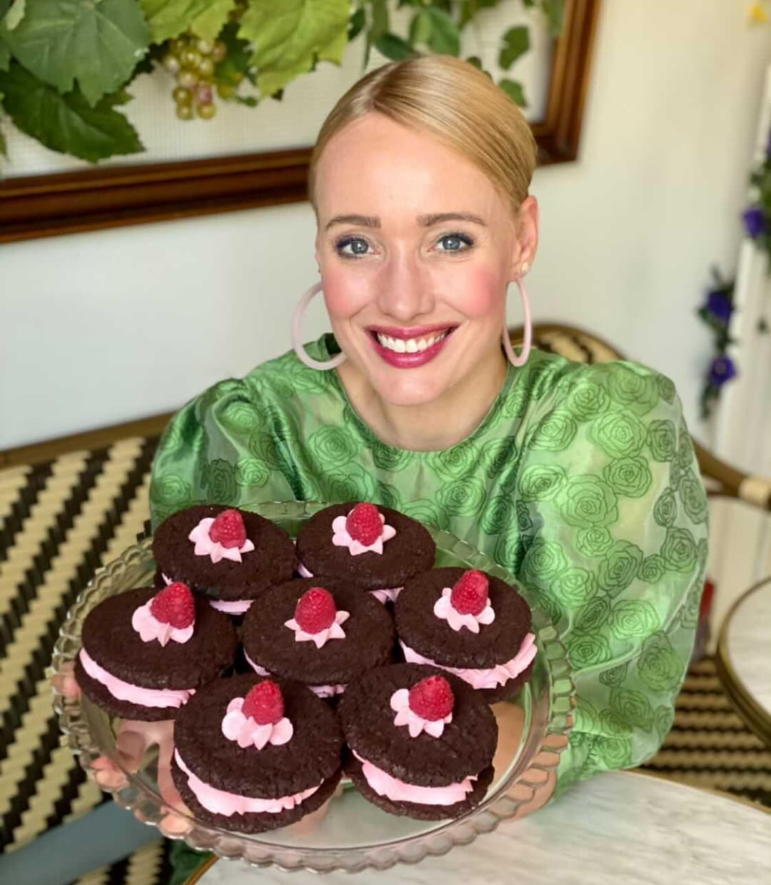

Søger du job
Kan du sælge labre blondiner og blærede brunetter med et smil på læben og et glimt i øjet, og er du ikke bange for at stå foran kageskabet og stråle om kap med blomster og farverige kager, er det måske dig vi søger til at være med til at give vores gæster en oplevelse i haveoasen der er værd at køre efter.
Vi er en unik konceptcafe hvor gæstens all around oplevelse er i centrum. Når man træder ind ad døren i caféen, skal man bydes velkommen til haveoasen af et smilende personale og så skal øjnene ellers vandre på skønne kager og en smukt indrettet farverig café til tonerne af fransk musik. Hos os, er feriestemning og glæde i højsædet – og selv når vi løber rigtig stærkt skal der være let til latter.
Dine opgaver vil primært bestå af servicering og rengøring, men du skal også være klar på at hjælpe til i kageriet!
Du skal være over 15 år og vi forventer at du er:
- 🌼 Skide sød, serviceminded og udadvendt.
- 🌺 Initiativrig og har mod på mange forskellige opgaver i en lille café med store armbevægelser.
- 🌻 At du er en holdspiller – også i weekenden!
Tilgengæld tilbyder vi dig at blive en del af et team i en skøn café i rivende udvikling - i et kagecafé eventyr der kun lige er begyndt.
Send din ansøgning til lenathorsson@hotmail.com